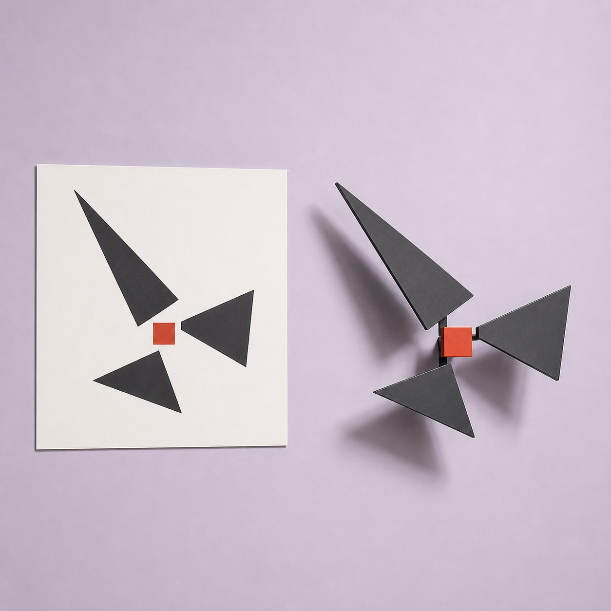
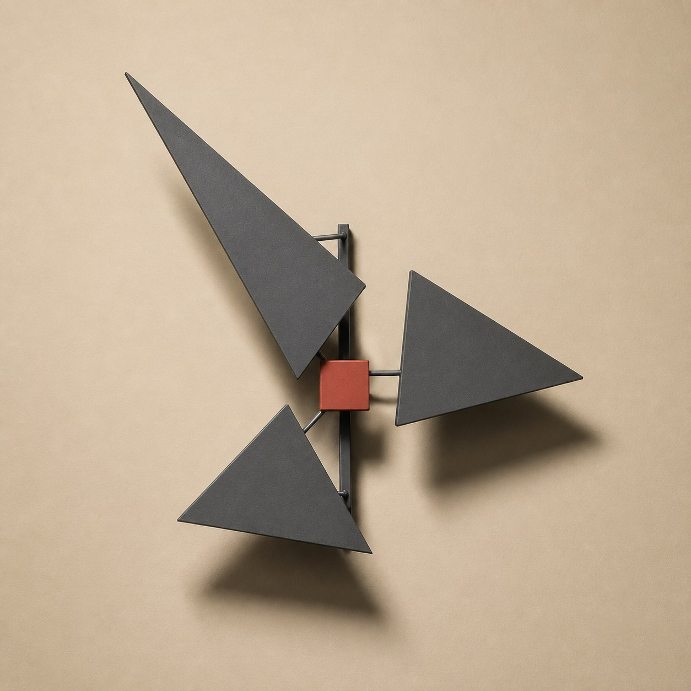
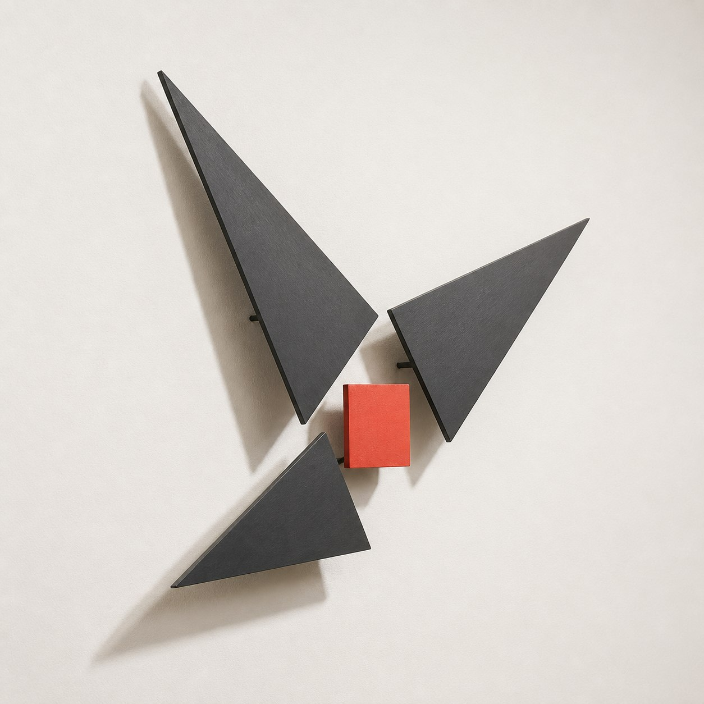
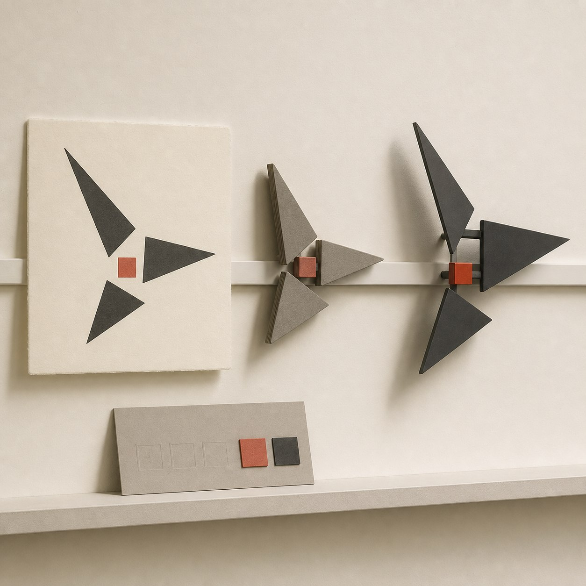

今日新构
一张已经完成、权利边界清楚的丝网版画里，三枚大小不同的黑色不等边三角形，围着一枚偏离中心的珊瑚红小方块顺时针转动。画面没有真实旋转，却靠三种指向把视线不断带回那个小轴点。
从轴点进入结构层
元维构把这组关系带进结构层时，先固定轴点，再记录三角形的朝向与先后。三个角都靠近红方块，却各自留出一条窄缝；只要把缝合上，或把轴点移回正中，原作里略带失衡的旋转节奏就会变得僵硬。
中间灰模把三枚薄片分成近墙、中层和外层。它们沿同一隐藏背脊安装，从斜侧面检查尖角是否完整、三层能否独立读清，以及正面看到的顺时针关系有没有被层距打乱。
材料、实体与档案
关系稳定后，方向样本可以使用炭灰色阳极氧化铝薄片、珊瑚红瓷质轴点和隐藏金属背脊。正面仍像一张简洁版画，侧面则出现三段不同的离墙距离与清楚投影；它是一件壁挂结构样本，不是标志、钟表或悬挂玩具。
原作、轴点定位图、三层灰模、实体正侧观察与材料记录可以进入同一份数字档案。本文和配图均为方向示意，不对应真实作者、客户、订单、展览、授权或已经完成的项目。
如果你的完整作品也由几枚形体围绕同一处重心展开，可以圈出不能移动的轴点，并标注观看顺序；元维构会整理一张侧视层距图，验证这股旋转节奏进入空间后是否仍然成立。